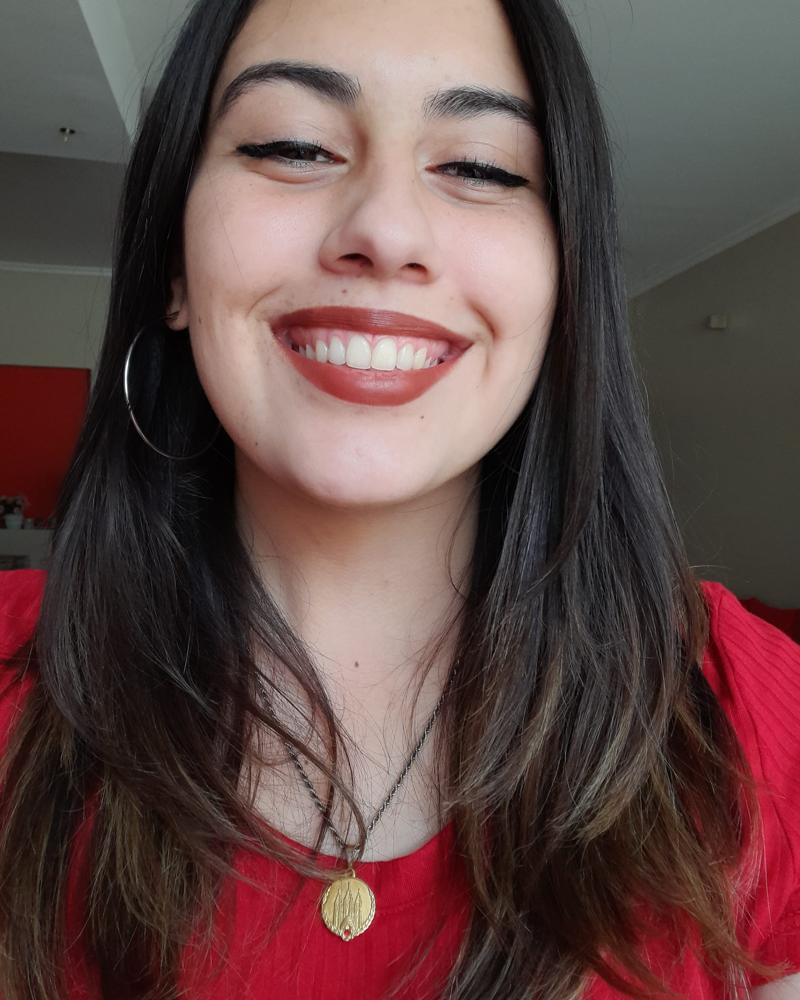

Hello y'all! My name is Giovanna Rotondo, I a 22 years-old single student. I am starting my BS in Applied Technology at BYUI.
I love to learn new things, read, write and create whatever my hands can do. I am studying Psychology at UNC which is a local university and I am also studying this because I would never want to miss the opportunity to learn at a university that has my same standards. I am truly greateful for this opportunity.
But why Applied Technology? For the reason that we are evolving in a more technological environment and I feel the necessity to keep up with the knowledge. I want to know how things work.
I've been a member of the church my whole life, I was baptised at almost 9 years old because I really wanted to have a testimony of the gospel before making my first covenant. I am deeply grateful for being born with the gospel, because it is something that has always guided to me to be better, to get closer to our Lord and to help others in a better way. I am a returned missionary and it was also an life-changing experience. I would never quit going to church every sunday. I am always trying to have better foundations of which my testimony depends on. I have read a lot and learned a lot, and I know this is true.